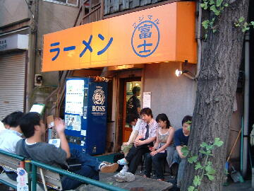

北区 神谷 3-29-11
月
18：00〜24：00

店員は、吉田さんと店員二名。
コショウ、しょうゆダレ、ラー油、唐辛子、ゴマ。味の変化が色々と楽しめる。
レンゲ有（給水機脇）、おしぼり、名刺無。
BGMは、前世紀の80年代頃にヒットした曲。富士丸独特の雰囲気を演出している。
トッピングは、ニンニク、ちょいヤサイ、ちょいアブラ。別皿のブタかす入りアブラは現金30円。
旧 ラーメン二郎 赤羽店
西新井と梶原に支店がある。
「ラーメン富士丸 神谷」でヤフー検索
「ラーメン富士丸 神谷」でヤフーリアルタイム検索
「ラーメン富士丸 神谷」でグーグル検索
国産ブタメン（ファーストロット） ニンニク ブタかす入りアブラ
麺は、ボソボソでシナシナとした食感の、富士丸でしか味わえない独特の旨味がある硬めの麺。量は多い。
少なめか半分にすると生玉子のサービスが受けられる。
２階で支店の分も一括して製麺されている。
ぶたは、ほとんど塊といってもいいくらいに分厚く切られた国産の豚が８切れ程と、その肉片がゴロゴロ。
丁度良いサシがムニュとして柔らかく、甘辛味も良くしみていてとても美味しい。
店主お勧めの食べ方は、豚にコショウをたっぷりかけ、スープをからめて口の中へ、すかさず麺も口の中へ。
スープは、豚の出汁と、野菜の甘みと、富士丸独自のニンニクとがタップリ溶け込んだ甘辛スープがナミナミと限界まで。
ヤサイは、モヤシ7：キャベツ3の割合。柔らかめに茹でられている。キャベツはぶつ切りだが柔らかくて美味しい。
ニンニクは、風味豊かでガツンとくる生ニンニク。本店はひと摘み程度。増しにすると大量。
豚増しの場合ゆで卵は付かない。写真はファーストロットのサービス。
ＰＣ店